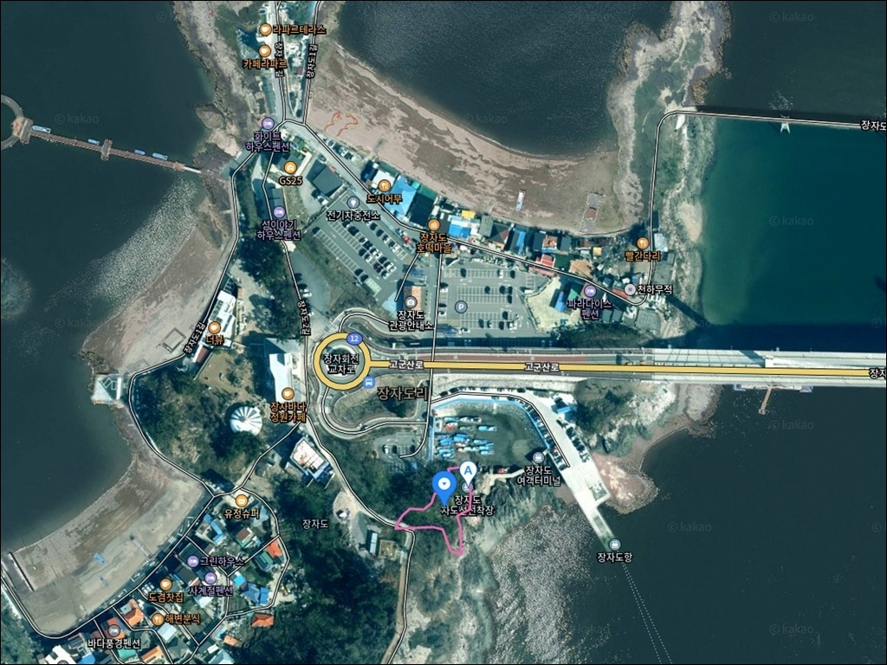
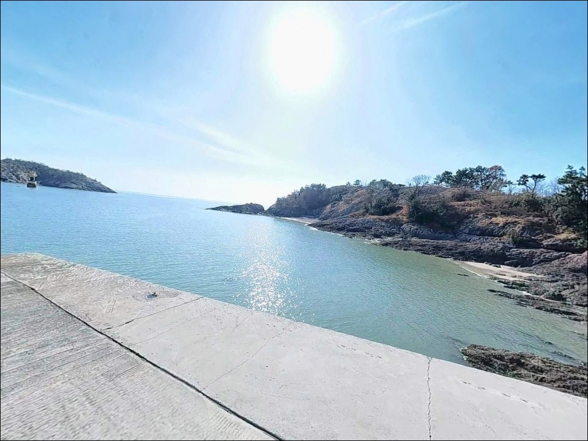
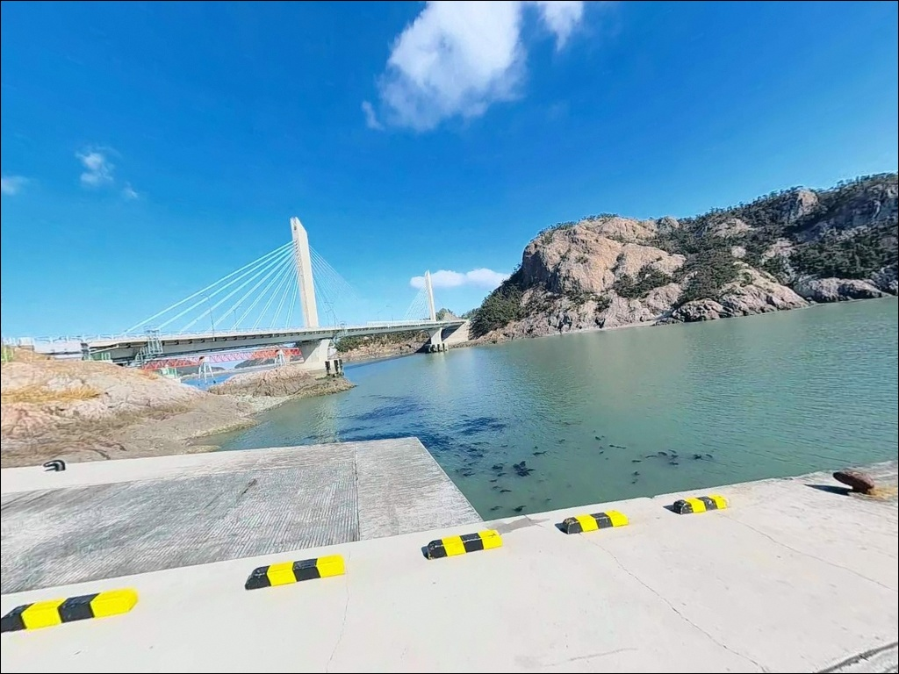
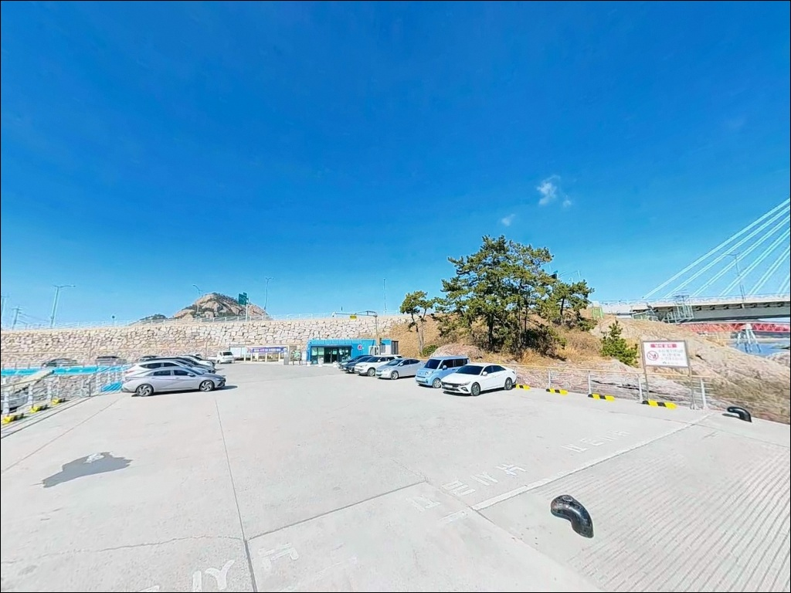
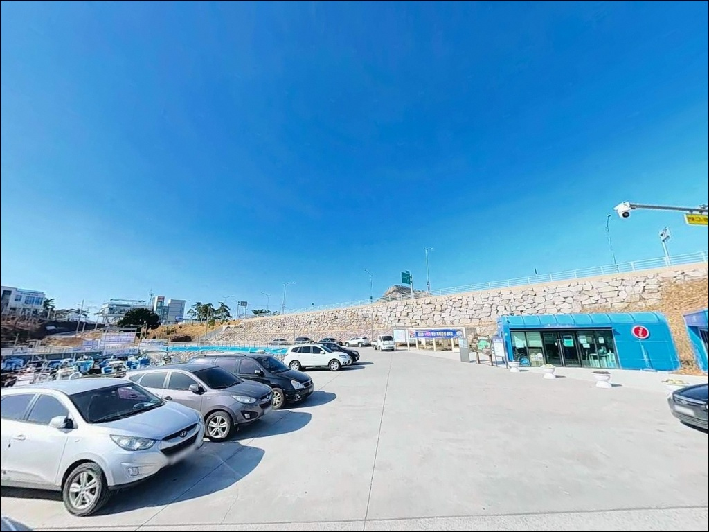
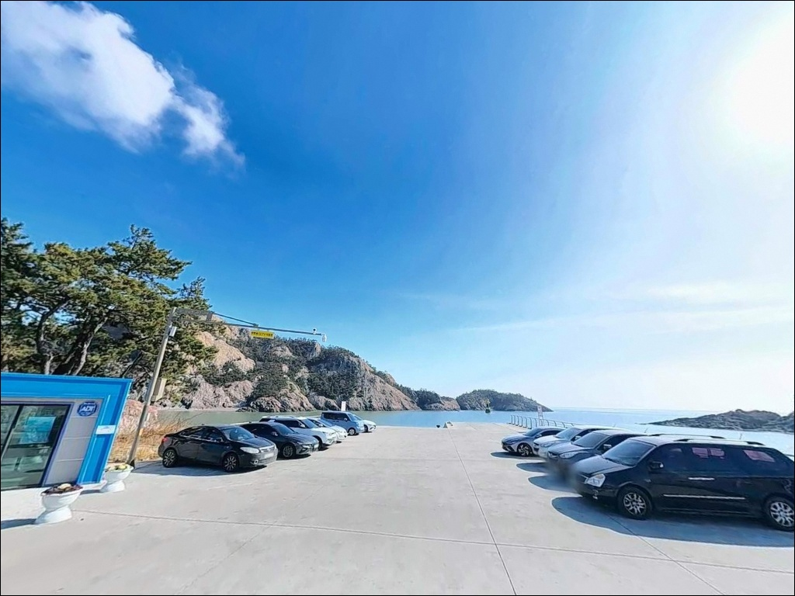
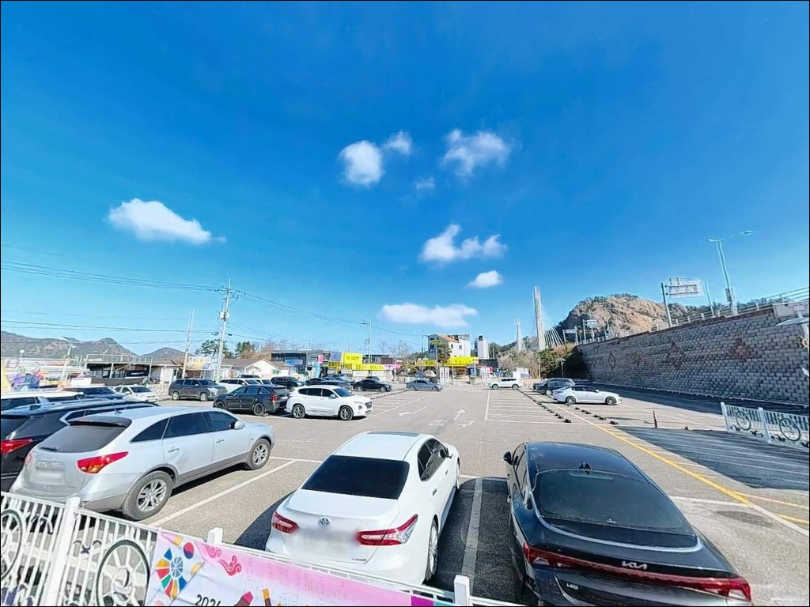
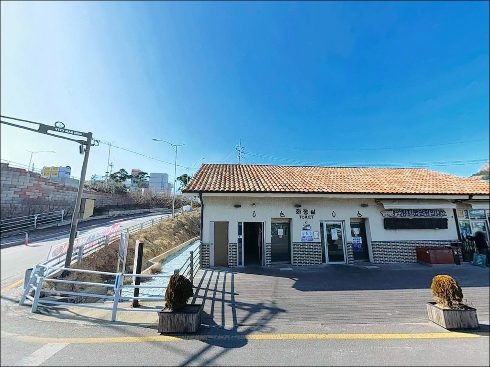
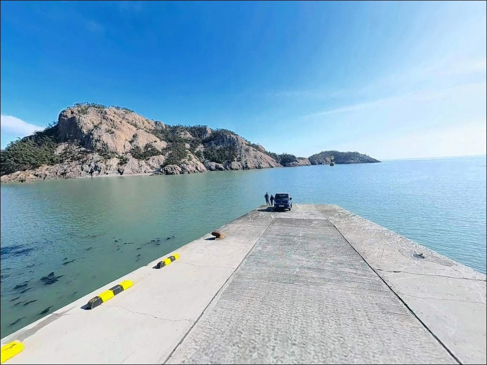

장자도항, 장자도여객터미널, 장자도 전북 군산시 바다와 가장 가까이 머무는 차박, 낚시 해안 명소
이 페이지에는 광고(제휴 링크 포함)가 있으며, 광고 링크를 통해 구매하면 운영자가 판매 수익 또는 수수료를 받을 수 있습니다. 포인트 사진: 카카오맵 스카이뷰·로드뷰. 이 페이지의 지도·사진 이미지는 카카오맵의 실제 서비스 이미지와 다를 수 있습니다.


포인트 안내
장자도여객터미널
전북 군산시 옥도면 장자도리 59
이른 새벽에 장자도를 향해 출발했다가
새만금방조제 통행 시간 전에 도착하면
방조제 입구에서 차를 세운 채
해가 뜨기를 기다리는 상황을 맞게 됩니다.
방조제 통행이 오전 6시부터만 가능하기 때문에,
출발 시각을 이 기준으로 역산하지 않으면
절반의 출조는 시작 전에 어긋납니다.
이 글은 장자도여객터미널 일대의
진입 조건, 낚시 지형, 조류 특성,
어울리는 낚시 방식과 대안 포인트에 집중합니다.
조황 단정이나 특정 어종 보장은
이 글의 범위에 포함되지 않습니다.

1. 진입 동선과 포인트 접근성
장자도는 새만금방조제를 통해
차량으로 진입할 수 있는 섬입니다.
새만금방조제 → 신시도 → 무녀도 → 선유도 → 장자도 순으로
고군산연결도로를 따라 이어지며,
승용차 기준 진입로 자체에 큰 어려움은 없습니다.
단, 새만금방조제 통행은 06:00~19:00만 허용됩니다.
야간 출조 또는 이른 새벽 진입은
이 시간 기준을 반드시 먼저 확인해야 합니다.
고군산군도 내부 도로는 좁은 구간이 포함되어 있습니다.
대형 SUV나 장비가 많은 차량이라면
교행 여유를 감안해 여유 있는 시간대에
천천히 진입하는 편이 좋습니다.
장자대교는 차량 통행이 불가하며
도보·자전거 전용 구간이므로
차량 진입 동선 확인 시 이 점을 미리 파악해 두어야 합니다.
주차는 여객터미널 인근 공영주차장 또는
터미널 자체 주차 구역을 활용하는 구조입니다.
여객선 운항 시간대에는 인파와 차량이 집중되는 편이라,
낚시 목적이라면 배편이 없는 한산한 시간대를 선택하는 것이
자리 잡기에 유리합니다.

2. 차박 환경과 야간 체류 여건
장자도여객터미널은 여객선 거점 시설 특성상
운항 시간대에 차량과 관광객이 집중됩니다.
터미널 바로 앞 공간은 협소한 편이라
터미널 직접 차박보다는
공영주차장 활용이 현실적인 선택입니다.
다만 공영주차장에서 낚시 포인트까지
장비를 들고 이동하는 동선이 생기므로,
낚시 메인 목적이라면 차박 효율이 높지 않은 구조입니다.
배편이 없는 시간대에는 통행이 적어
비교적 조용한 환경이 만들어집니다.
터미널 시설물과 가로등이 있어
야간 시야 확보는 가능한 편이지만,
낚시 포인트인 갯바위 쪽으로 이동하면
조명이 줄어드는 구간이 생깁니다.
갯바위 진입 시 개인 헤드랜턴은 필수입니다.
고군산군도 특성상 외해 노출 구간이 있어
바람 영향을 받는 날씨에는
야간 체류 환경이 달라질 수 있습니다.
차박을 메인으로 계획하는 낚시인이라면
인근 선유도 쪽 공영주차장 여건도
함께 비교해 두는 편이 선택지를 넓혀줍니다.


3. 주변 편의시설 및 인프라 현황
장자도 내에는 세븐일레븐과 이마트24가 있습니다.
관광지로 정비된 섬 특성상
식당과 카페도 주변에서 찾을 수 있습니다.
기본 생활물품과 낚시 소품 일부는
섬 안에서 해결 가능한 환경입니다.
그러나 전문 낚시용품이나 얼음, 충분한 미끼는
출발 전에 육지에서 준비해 두는 편이 안전합니다.
응급 상황 발생 시 군산 시내까지 거리가 상당하므로,
비상약품·연료·음료는 출발 전 완비가 기본입니다.
인근 선유도 권역까지 이동하면
상권과 인프라 규모가 다소 넓어집니다.

4. 방문 전 반드시 챙겨야 할 준비사항
장자도여객터미널 방문 전 가장 먼저 확인할 것은
두 가지입니다. 새만금방조제 통행 가능 시간과 물때입니다.
방조제 통행이 06:00~19:00로 제한되어 있어
출발 시각과 귀환 동선 모두 이 기준에 맞춰야 합니다.
물때는 바다타임에서 장자도방파제 기준으로 확인하고,
조금 전후 또는 그 인근 타이밍을 노려
입장 시각을 맞추는 것이 기본 전략입니다.
고군산군도 일대는 안개가 자주 발생하며
겨울에는 대륙성 고기압 확장 시 돌풍이 올 수 있습니다.
기상청 예보를 당일 아침 다시 한번 확인한 뒤
출발 여부를 결정하는 것이 안전합니다.
갯바위 진입 구간이 포함되는 포인트이므로
구명조끼는 반드시 착용해야 하며,
조류 시간대 수위 변화가 빠른 편이라
채비 손실에 대비해 여분 채비를 넉넉히 준비하는 것이 좋습니다.
여객선 운항 동선과 어업 활동 구역을
낚시 자리 선정 전에 파악해 두는 것도 기본 매너입니다.
선착장 접안 구역에서는 안전 거리를 충분히 확보하고,
입출항 시간대에는 채비를 미리 회수하는 것이 원칙입니다.

5. 장자도가 서해 낚시인에게 유리한 지형 조건
장자도여객터미널 일대는 선착장, 방파제, 갯바위가
한 구간에 복합적으로 이어지는 구조입니다.
수심은 갯바위 기준 8~12m 수준으로,
서해 방파제 포인트 중에서도 깊은 편에 속합니다.
바닥 저질이 모래로 형성된 구간이 있어
넙치·붕장어·양태 등 바닥 어종이
자리를 잡기 좋은 조건을 갖추고 있습니다.
고군산군도 해역 전반에 걸쳐
창조류는 북동 방향, 낙조류는 남서 방향으로 흐르며
최강 조류는 약 2.6kn 수준으로 서해 기준으로도
조류 세기가 있는 편입니다.
섬과 섬 사이 수로 구조가 조류를 집중시키는 역할을 하며,
이 흐름이 회유성 어종의 이동 길목을 만들어냅니다.
방파제 외항 끝단은 조류 흐름이 직접 닿는 자리로,
루어 반응이 살아나는 구간입니다.
다만 사리 전후에는 조류가 너무 세져
어떤 채비를 써도 컨트롤이 어려워집니다.
정조 타이밍 또는 조금 전후에 집중하고,
조류가 강한 시간대에는 봉돌 무게를 올리거나
잔잔한 내항 쪽으로 자리를 옮기는 판단이 필요합니다.
최신 조황은 출조 전에 꼭 검색해 보시기 바랍니다.


6. 포인트에 어울리는 낚시 스타일
이 포인트에서 가장 잘 맞는 낚시는 루어낚시입니다.
갯바위에서 그럽웜, 미노우 플러그, 지그헤드 리그를 활용해
노래미·농어·넙치를 노리는 방식이
8~12m 수심과 갯바위 지형 조건에 맞습니다.
외항 방향에서 조류를 가로질러 끌어오는 액션이
농어와 노래미 반응을 이끌어내기 좋은 운용법입니다.
원투낚시도 이 포인트에 잘 맞는 스타일입니다.
모래 저질 바닥 구간을 향해 채비를 멀리 보내
넙치·붕장어·양태를 노리는 방식은
정조 전후 조류가 잦아드는 타이밍에 집중하면 효율이 올라갑니다.
미끼는 청갯지렁이·홍갯지렁이·오징어살이 기본입니다.
내항 쪽 잔잔한 수면 구간에서는
릴찌낚시로 노래미를 노리는 방식도 어울립니다.
여름~가을 시즌에는 갑오징어·주꾸미 에깅도 시도해볼 만합니다.
석축과 갯바위 주변 수중 구조물을
에기로 탐색하는 방식이
두족류 서식 조건에 맞는 공략법입니다.

7. 대안 포인트와 플랜 B 동선
장자도여객터미널 자리 여건이 여의치 않거나
조류가 너무 강해 낚시가 어려운 상황이라면
선유도 남도 방파제가 첫 번째 대안입니다.
장자도에서 약 1.6km 거리로
고군산연결도로 동선상 가장 가까운 대체 포인트입니다.
선착장 구조로 진입이 수월하고
장자도와 비슷한 서해 연안 어종을 기대할 수 있습니다.
무녀도 선착장은 약 2.1km 거리,
선유도 북도 방파제는 약 2.7km 거리에 있어
고군산연결도로를 따라 이동하며
순서대로 탐색할 수 있는 동선입니다.
장자도를 처음 찾는 낚시인이라면
이 세 곳을 플랜 B 순서대로 파악해 두는 것이
헛걸음을 줄이는 방법입니다.
방축도 선착장 갯바위는 약 4.3km 거리이지만
여객선으로 이동해야 하는 구간입니다.
본격적인 갯바위 낚시를 원한다면
장자도여객터미널에서 배편을 이용해
방축도나 관리도로 이동하는 동선도
고군산군도 낚시를 즐기는 방법 중 하나입니다.

방조제 통행시간과 물때,
두 가지만 맞추면 장자도는 달라 보입니다
수심 8~12m의 갯바위 구조와
서해 조류가 살아 있는 방파제 외항을 가진
장자도여객터미널은,
루어낚시와 원투낚시를 즐기는 낚시인에게
지형 조건이 잘 맞는 포인트입니다.
넙치·노래미·농어·붕장어 등
서해 연안 어종이 두루 기대되는 구조이며,
여름~가을 시즌에는 두족류 에깅도 함께 노릴 수 있습니다.
반면 새만금방조제 통행 제한 시간은
장자도 출조 계획 전체를 좌우하는 핵심 변수입니다.
이 시간을 확인하지 않고 이른 새벽 출발을 잡으면
방조제 앞에서 시간을 허비하는 상황이 생깁니다.
물때와 방조제 통행 가능 시간,
이 두 가지만 맞춰 계획을 세운다면
헛걸음 없이 고군산군도를 즐길 수 있는 포인트입니다.
차박 메인으로는 적합하지 않지만,
고군산군도 섬 낚시를 위한 거점으로 활용하거나
연결도로를 따라 여러 방파제를 돌며 탐색하는
이동 낚시 베이스로는 충분히 가치 있는 자리입니다.
낚시를 마치고 장자도 방파제 옆에 차를 세워 두면,
서해 일몰과 함께 하룻밤을 정리하기 좋은 곳이기도 합니다.